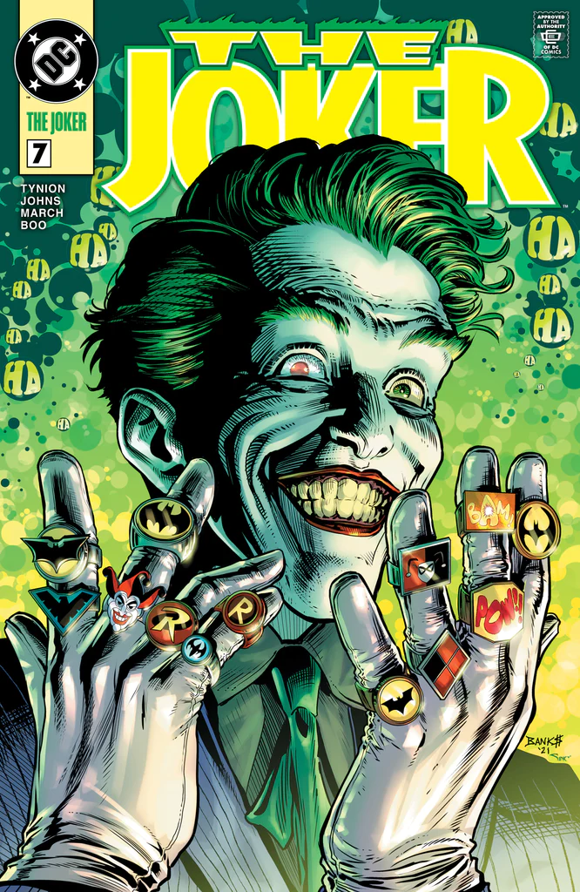
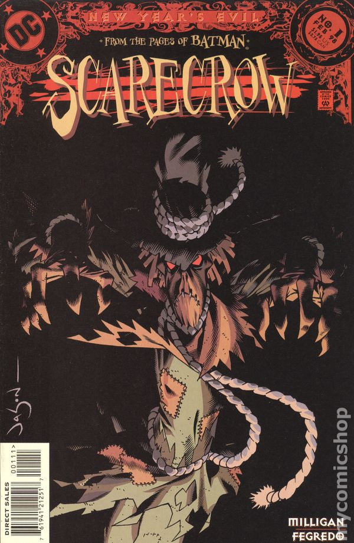
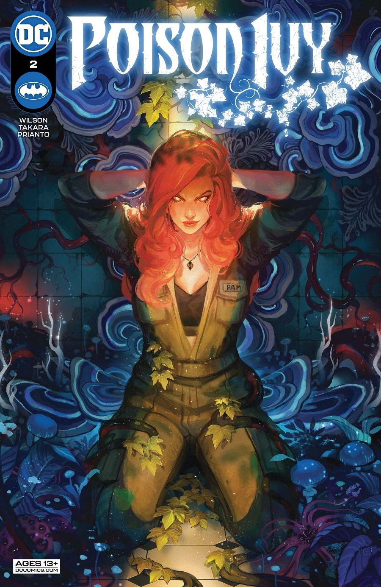
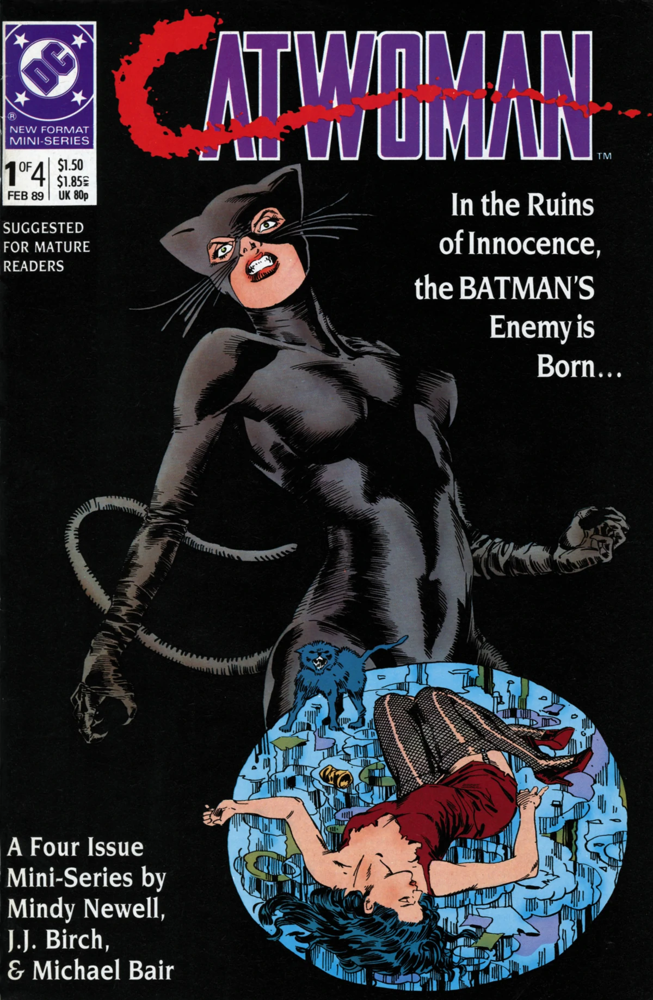
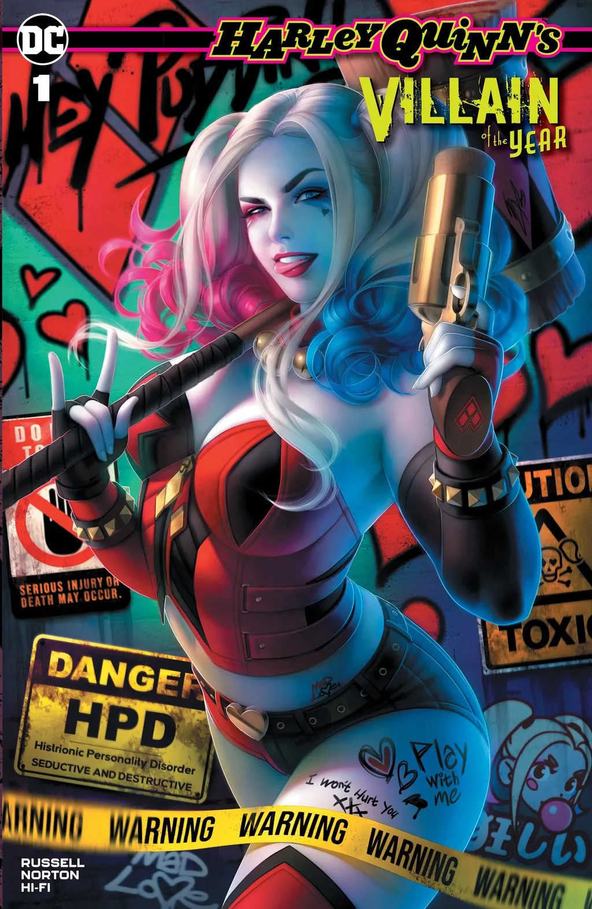

Meet The Family
The Injustice League are the antagonists of the Justice League. The Injustice League has been through three incarnations.
The first incarnation was led by Agamemno and consisted of Lex Luthor, Black Manta, Catwoman, Chronos, Doctor Light, Felix Faust, Mister Element, Penguin, Sinestro, and Zoom.
The second incarnation was the Injustice League International that consists of Cluemaster, Major Disaster, Clock King, Big Sir, Multi-Man, and the Mighty Bruce. Maxwell Lord turned this group into the Justice League Antarctica while adding G'nort and Scarlet Skier to the group.
The third incarnation was the Injustice League International and was formed by Lex Luthor, Cheetah, and Joker.
Its core membership consists of Cheshire, Deathstroke, Doctor Light, Fatality, Giganta, Gorilla Grodd, Killer Frost, Parasite, Poison Ivy, Shadow Thief, and Shaggy Man.Other known members are Black Manta, Clayface, Doctor Sivana, Double Dare, Effigy, Felix Faust, Girder, Hammer and Sickle, a Hyena, Iron Cross of the Aryan Brigade, Jewelee, Jinx, Key, Killer Croc, Lady Vic, Major Force, Magenta, Mammoth, Manticore, Metallo, Mister Terrible, Mirror Master, Monsieur Mallah, Mr. Freeze, Nocturna, Phobia, Prankster, Psimon, Queen Bee, Rag Doll, Riddler, Rock, Scarecrow, Shimmer, Shrapnel, Silver Monkey, Skorpio, Sonar, T.O. Morrow, Tar Pit, Toyman, Tremor of the Superior Five, Two-Face, and Warp.
In 2011, "The New 52" rebooted the DC universe. During the "Forever Evil" storyline, Lex Luthor forms this version of the Injustice League to combat the Crime Syndicate of America. It consists of Bizarro, Black Adam, Black Manta, Captain Cold, Catwoman, Deathstroke, and Sinestro.
| Joker | Scercrow |
|---|---|
|  |  |
The Joker is a supervillain appearing in American comic books
|
The Scarecrow is a supervillain appearing in American comic books
|
| Poison-Ivy | Cat-woman | Harley Quinn |
|---|---|---|
|  |  |  |
Poison Ivy (Dr. Pamela Lillian Isley)
|
Catwoman (Selina Kyle)
|
Harley Quinn ( Dr. Harleen Quinzel)
|